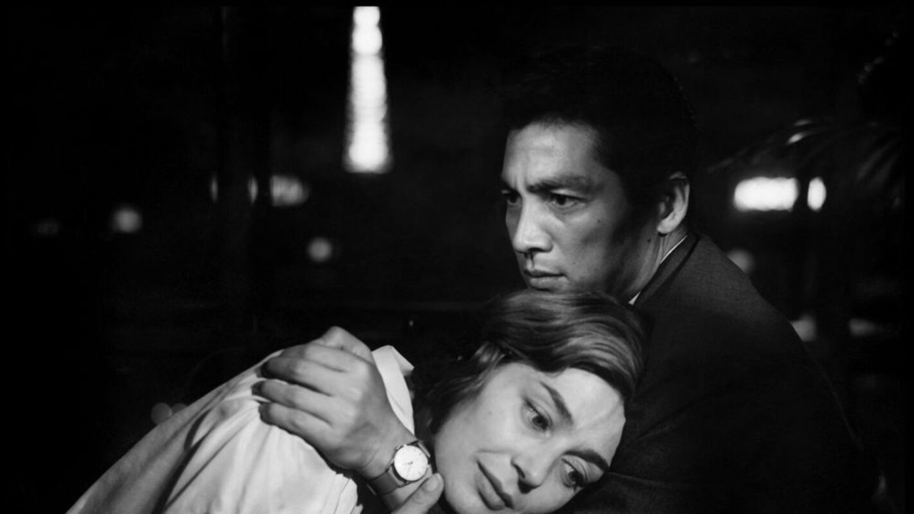

Мало хто сьогодні не знає про французьку «нову хвилю». Проте навряд чи ми всі методично дивилися стрічки, які зараховують до цього напрямку. Колись покоління «молодих і зухвалих» французьких кінокритиків, що виросло на теоретичній платформі Андре Базена та досвіді роботи в Cahiers du cinéma, прагнуло порвати з пафосом комерційного кіно й привнести в свої фільми радикальні експерименти. Ми не будемо багато говорити про Годара, Трюффо або Ромера: ми просто ще раз нагадаємо вам про їх фільми. Якщо не дивилися – саме час виправитись, а якщо вже бачили – ніколи не буде зайвим переглянути.
Головні фільми французької нової хвилі
«Красунчик Серж» (1958), реж. Клод Шаброль
Цей фільм вважається не просто дебютним у Шаброля, який знімав його за свої гроші, що дісталися йому в спадок, а й взагалі першим фільмом французької «нової хвилі». Клод Шаброль зізнавався, що на початку зйомок навіть не міг зрозуміти, як правильно дивитися в камеру. Однак, прагнення до оновлення кінематографа й експериментів, а також відмінна теоретична база від написання матеріалів для «Cahiers du cinéma» допомогли Шабролю створити дещо видатне.
В історії про Франсуа, який повернувся в рідне містечко і зустрів старого друга з тяжким життям, немає такого оригінального підходу до картинки, як згодом у Годара, але акцент на розгубленості нового покоління французів і безпросвітності життя, оповитого липким провінціалізмом, поклали початок одному з найбільш яскравих і протестних напрямків в європейському кіно.
«Хіросіма, моя любов» (1959), реж. Ален Рене
«Ти мене руйнуєш. Ти приніс мені радість. Як можна було сумніватися, що це місто зшито за лекалами любові. Як можна було сумніватися, що ти зроблений за розмірами мого тіла. Ти мені подобаєшся. Яка подія. Ти мені подобаєшся. Яке раптове гальмування. Яка м’якість. Ти сам не знаєш. Ти мене руйнуєш. … У мене є час. Прошу тебе, поглинь мене».
Чи треба говорити щось ще? Фільм за сценарієм Маргеріт Дюрас – це поліфонічне кіноесе, рівень чуттєвості та сміливості якого змушує включити його в перелік найкращих французьких стрічок. Любов на коротку мить відновлює час, що розпався, й усуває страх перед життям. Порівняння атомної катастрофи – трагедії японського народу і справжнього злочину XX століття – та історії дівчини, яка щиро покохала німецького солдата й поплатилася за свої почуття, звільняє пригнічене, зі смаком попелу й крові, минуле на екрані.
«Чотириста ударів» (1959), реж. Франсуа Трюффо

«Faire les 400 coups» – це значить вести себе на межі пристойності, порушувати моральні норми. Головний герой фільму Антуан Дуанель став справжнім альтер его самого режисера – Франсуа Трюффо. Стрічка присвячена впливовому теоретику кіно Андре Базену – вчителю авторів, яких включають до французької «нової хвилі», що подарував їм теоретичну базу й фундамент для наслідування та переосмислення (йому варто дякувати за те, що французька нова хвиля росла на фільмах Ланга, Веллса, Бунюеля, Гічкока, Карне та Ренуара, а також абсорбувала їхні художні особливості).
Вільний дух у фільмі переданий не тільки в амплуа «enfant terrible» Дуанеля, що прагне стати дорослим та не розуміє відсутності схвалення від дорослого світу, який зарахував його до маргіналів, але і в зйомці, заснованій на імпровізації та запрошенні непрофесійних акторів.
«На останньому подиху» (1960), реж. Жан-Люк Годар
Цей фільм заведено вважати одним з перших і найбільш характерних для всього напрямку, фактично програмним маніфестом французької нової хвилі. Історія про Мішеля і Патрісію (у виконанні молодих і прекрасних Жана-Поля Бельмондо та Джин Сіберг), що імітують звички героїв з обожнюваного ними нуару, вважається класичною сьогодні, але колись була створена в обхід всіх кінематографічних правил.
Годар створював сценарій «на колінці», знімав фільм на мізерний бюджет і використовував для динамічності руху камери інвалідний візок. «На останньому диханні» змонтовано так, аби передати рух життя, органічність дій акторів на фоні міських вулиць. Герої раз у раз руйнують «четверту стіну», цитують книги і пісні, фільми з Хамфрі Богартом. На хвилинку, тут Мельвіль грає Парвулеску.
«Жінка є жінка» (1961), реж. Жан-Люк Годар
Яскравий «годарівський» триб’ют американській музичній комедії зосереджений на трьох персонажах: Анжелі, Емілю та Альфреді. Історія стосунків між виконавицею еротичних танців та її коханцями схожа на гру. Тут все побудовано на тактиці «гаряче-холодно», маніпуляціях і заграваннях, які деконструюють (або підтверджують їх, хто знає?) протягом оповіді популярні стереотипи про кохання між чоловіком і жінкою.
«Жити своїм життям» (1962), реж. Жан-Люк Годар
Справжній акторський тріумф музи Годара, чергове дослідження табуйованої проблематики і просто свято «магії кіно» – все це про «Жити своїм життям». Історія жінки в проституції демонструє ілюзорність свободи. Нана всього лише хотіла здобути незалежність і вирішити власні матеріальні проблеми, але в підсумку прийшла до того, щоби продавати своє тіло.
Стрічка сповнена цитат і дрібних алюзій-вкраплень, які зустрічаються в нескінченному діалозі, потоці життя, вируючому навколо головної героїні.
«Зневага» (1963), реж. Жан-Люк Годар
Назва картини відсилає нас до того почуття, яке режисер, насправді, мав щодо до втручання продюсерської кліки в творчий процес. Відомо, що після майже повного завершення зйомок продюсери почали вимагати в автора більше оголених зірок на екрані. Це не стільки мелодрама про складні стосунки пари, скільки кінематографічний маніфест, спрямований проти комерційного кіно.
Перед зйомками «Зневаги» Бардо хотіла вже закінчити акторську кар’єру, втомившись від надмірної уваги до своєї особистості, але вона не змогла відмовити Годару. В результаті ми отримали фільм, в якому героїня Бардо, Камілла, є своєрідним проявом архетипового образу Пенелопи з «Одіссеї».
«Шербурзькі парасольки» (1964), реж. Жак Демі
Музична мелодрама Жака Демі розділена на три частини: Від’їзд, Розлука і Повернення. Формат фільму став революційним для «новохвильового» періоду у французькому кіно – у стрічці немає жодного розмовного діалогу, всі персонажі співають свої репліки.
Ніжні кольорові рішення, романтичний музичний супровід і легкий любовний флер оповідання – це все лише фон, ширма для драматичних сюжетних колізій. Війна в Алжирі займає центральне місце в житті Гійома «Гі» Фуше, ділить світ героїв на «до» і «після».
«Чоловіче – жіноче» (1965), реж. Жан-Люк Годар

Кажуть, що «Чоловіче – жіноче» – це вже зовсім не нова хвиля, і якщо підійти до напрямку «з лінійкою», то ця яскрава і провокаційна стрічка буде вже десь далеко за межою даної кінотечії. Ми погоджуємося і не погоджуємося: талант Годара неможливо оцінити без перегляду цієї стрічки.
У фільмі не раз згадуються політичні діячі того часу й культурні ідоли, а тому це документ епохи, в якому живуть і кохають люди, що застали Шарля де Голля, молодість Боба Ділана й початок зйомок фільмів про Джеймса Бонда. Соціальна платформа та політичний бекграунд чітко проглядаються в «Чоловічому – жіночому»: тут вже зовсім близько 68-й рік, не дарма найбільш відомою цитатою з картини (ця фраза з’являється в фірмових «субтитрах» Годара, що служать роздільником глав фільму) прийнято вважати: «Цей фільм можна назвати «Діти Маркса і Кока-Коли».